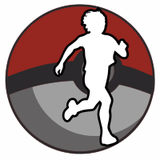

Does Pokemon GO affect activity? Let's share our data & find out!

If you have an iPhone or Fitbit, you can contribute!
Open Humans is a non-profit platform that enables research and citizen science projects – like this one! Use the link below to sign up to Open Humans, join this project, and get our badge on your Open Humans profile.
After you join our project on Open Humans, you'll be asked to complete a brief survey.
Once you have an Open Humans account, connect data to share it with us.
Did you know your iPhone tracks steps? You can see it in the Health app! You can use this 3rd party app (created by Open Humans member James Turner) to push your HealthKit data to Open Humans.
Does Pokemon GO affect YOUR activity? What about others?
Let's build data insights and visualizations by pooling our data together!
"Open Pokemon GO GO GO" is a data sharing project: we want to collectively create a data set about Pokemon GO. Then we're going to share it – unidentified public data that everyone can explore and visualize!
This is NOT a formal research study. (No ethics board has reviewed this.) This document describes how we plan to work with you and your data.
If either of the following is true, you're a great candidate for activity data sharing...
In the survey, we'll ask if you want to contribute to potential weekly follow-up responses. This is optional, you'll be able to opt out later as well.
A lot of people helped us design this project, but access to data is limited to the project coordinators. These coordinators are currently Madeleine Ball and Ernesto Ramirez. You can email us at open-pokemon-go-go-go@googlegroups.com.
Through Open Humans, the project coordinators will be able to access your entire HealthKit and/or Fitbit data. We will process this data to extract the following subset, which will be released in a public data set along with your survey responses.
Our project coordinators will also have permission to send you messages through Open Humans (you'll receive these messages as emails).
This might occur if...
We plan to share individual level data "anonymously" (where individuals each have random IDs).
We think it should be difficult to identify individuals – and we think the data is generally harmless – but it might be possible for someone to identify your data. (For example, if you have particularly unique answers for the survey questions.)
Only participate and share if you're OK with this!
Through Open Humans you can quit this project at any time, deauthorizing access to your data and revoking permission to send you messages.
Want to run projects like this? You can! This was set up as a project on Open Humans. Others are welcome to create similar studies and projects! Read more here: https://www.openhumans.org/direct-sharing/overview/.